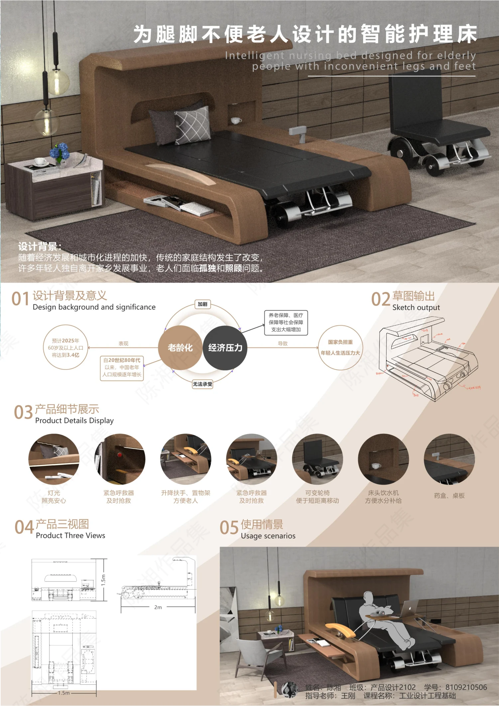

PROJECT 10 / ASSISTIVE CARE BED
面向腿脚不便老人的智能护理床
围绕卧床与移动需求，思考老年人的居家照护体验。

居家照护的日常问题
项目关注行动不便老人面对的照护与日常活动问题，以家庭使用情境为基础提出护理床概念。
整合床与移动辅助
方案探索床体与可变形移动辅助部分的结合，并整合扶手、升降、收纳、照明和折叠桌板等功能构想。
以场景说明功能
展板通过草图、产品细节、三视图和使用场景表达护理与移动之间的衔接；不将概念功能描述为已通过安全或医疗验证。
PROCESS / 设计过程与展板
CLICK TO VIEW FULL SIZE以下为作品集中记录的设计方案与过程。图片可点击放大查看，保留原稿内容与水印。

内容来源：《陈湘作品集（展板）》第 5 页右侧。未明确的项目时间、个人分工及落地结果未作推断。